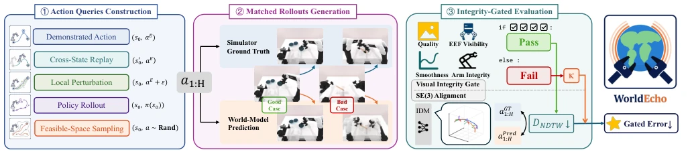
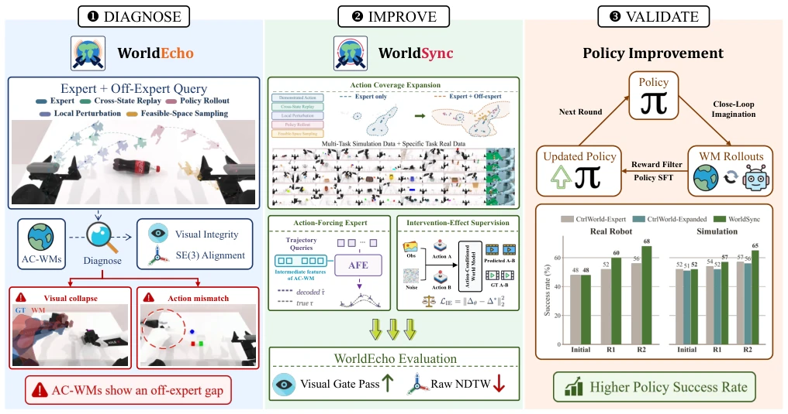
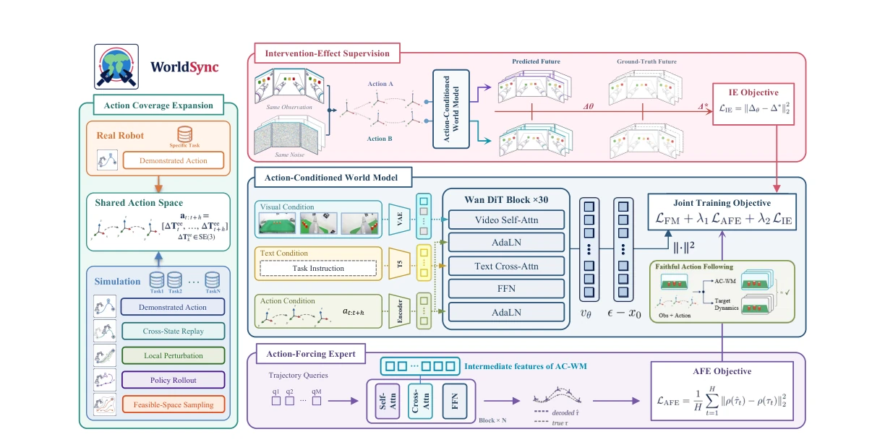
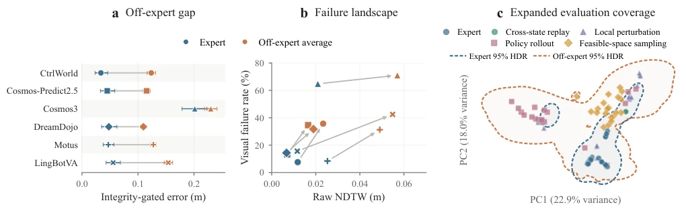
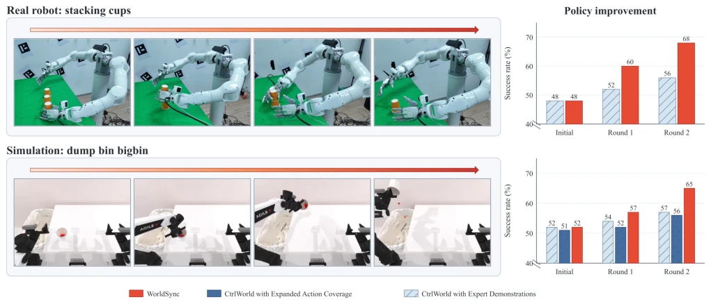

This paper casts a cold shower on the "blind confidence" of Action-Conditioned World Models (AC-WMs). It was generally believed that feeding the model expert data would allow it to be used as a simulator, but testing revealed: expert actions can be simulated, but it collapses when deviating slightly from the expert distribution. WorldEcho's evaluation is quite harsh; not only does it check video similarity, but it also uses SE(3) trajectory alignment, directly exposing the hallucination of "visually plausible but action incorrect". WorldSync's trio (coverage expansion, AFE, IE) sounds comprehensive, and experiments indeed boosted policy success rates. However, can this method relying on mixed simulation data training truly completely solve the Sim2Real gap? At least it is much stronger than datasets that only run expert replays, counting as a prescription for the Embodied AI "simulator trust crisis", but side effects (training costs) may be significant, and generalization to long-horizon interactions remains doubtful, after all open-world dynamics are far more complex than simulation.
研究动机Motivation
当前 Action-Conditioned World Models (AC-WMs) 被广泛用作策略评估和优化的 learned simulators (Quevedo et al. 2026; Guo et al. 2026a)。然而，其有效性基于一个未经验证的假设：生成的未来能忠实反映任意有效动作。现有基准主要评估感知质量或专家演示相似度 (Hu et al. 2025; Shang et al. 2026a)，忽略了 off-expert 动作的跟随能力。策略迭代必然引入分布外动作 (Ross, Gordon, and Bagnell 2011; Yu et al. 2026)，若模型仅拟合专家轨迹，会导致模拟与真实性能差距 (Quevedo et al. 2026)。MiraBench 虽涉及失败扰动，但缺乏连续 SE(3) 轨迹真值 (Yang et al. 2026a)。因此，亟需一种能诊断并纠正动作跟随偏差的框架，确保模拟器在策略探索阶段依然可靠，避免策略在虚假的模拟反馈中“走火入魔”。
Current Action-Conditioned World Models (AC-WMs) are widely used as learned simulators for policy evaluation and optimization (Quevedo et al. 2026; Guo et al. 2026a). However, their effectiveness is based on an unverified assumption: generated futures faithfully reflect any valid action. Existing benchmarks mainly evaluate perceptual quality or expert demonstration similarity (Hu et al. 2025; Shang et al. 2026a), ignoring off-expert action following capabilities. Policy iteration inevitably introduces out-of-distribution actions (Ross, Gordon, and Bagnell 2011; Yu et al. 2026); if the model only fits expert trajectories, it leads to a gap between simulation and real performance (Quevedo et al. 2026). Although MiraBench involves failure perturbations, it lacks continuous SE(3) trajectory ground truth (Yang et al. 2026a). Therefore, there is an urgent need for a framework capable of diagnosing and correcting action following bias, ensuring the simulator remains reliable during the policy exploration phase, avoiding the policy going "astray" in false simulation feedback.

Figure 3: Overview of WorldEcho. Five action query categories span demonstrated and off-expert actions. Each action sequence produces matched simulator reference and world model rollouts. Visual integrity and SE(3) end effector trajectory alignment are jointly evaluated. The gated error uses NDTW for valid rollouts and a fixed penalty κ otherwise.
The overall process follows a "Diagnosis-Improvement-Verification" closed loop. First, construct five types of action queries via WorldEcho (expert demonstration, cross-state replay, local perturbation, policy rollout, feasible space sampling), jointly evaluating visual integrity (image quality, smoothness, gripper visibility, manipulator integrity) and SE(3) end-effector trajectory alignment (NDTW). Addressing the diagnosed off-expert support gap, propose the WorldSync training recipe. First, Action Coverage Expansion: unify simulation expert/perturbation/policy trajectories with a small amount of real data, train under a shared SE(3) action space, expanding the action consequence distribution. Second, Representation Layer Grounding: introduce Action-Forcing Expert (AFE), decode future end-effector trajectories from video intermediate features, forcing feature encoding of action-induced dynamics. Third, Intervention Effect Alignment: use Intervention-Effect (IE) supervision, compare predicted changes vs. ground truth changes for different actions under the same observation, ensuring the model learns how action changes affect the future. Finally, jointly optimize Flow Matching generation loss, AFE trajectory loss, and IE alignment loss, achieving more faithful action-conditioned generation.

Figure 1: Overview of our diagnose–improve–validate pipeline. WorldEcho probes action-conditioned world models with demonstrated and diverse off-expert queries, jointly evaluating visual integrity and SE(3) end-effector alignment to expose visual collapse and action mismatch. Guided by this diagnosis, WorldSync broadens the training distribution over action consequences, grounds intermediate video representations in action-induced robot dynamics through an Action-Forcing Expert, and aligns predicted changes under action interventions with the corresponding changes in ground-truth futures. In simulation and real-robot policy-improvement experiments, these gains translate into higher policy success rates.

Figure 4: Overview of WorldSync. We expand action coverage by unifying diverse simulated expert and off-expert trajectories with target-domain real-robot demonstrations in a shared SE(3) end-effector action space. The AC-WM generates future videos from visual, language, and action conditions. AFE grounds intermediate video representations in future robot trajectories, while IE supervision aligns predicted and ground-truth intervention effects under shared observations and noise. All objectives are jointly optimized for faithful action following.

Figure 5: Diagnosing off-expert action following and evaluation coverage. (a) Integrity-gated error on expert and off-expert actions across six world models; error bars show task-bootstrap 95% confidence intervals. (b) Changes in raw NDTW and visual failure rate from expert to off-expert actions. (c) PCA visualization showing that off-expert queries cover a broader action distribution than expert actions.
Evaluated on RoboTwin 50 tasks and real manipulator cup stacking tasks. Compared against 6 baselines including CtrlWorld, Cosmos-Predict2.5, etc. Metrics include integrity-gated error, raw NDTW, and visual pass rate. Results show expert-trained models' error significantly increases under off-expert actions (0.029–0.099 m), visual failure rate rises 6.3–28.1%. WorldSync is optimal in integrity-gated error (0.0661 m), highest visual pass rate (84.51%). In downstream policy improvement experiments, WorldSync increases RoboTwin success rate by 13 percentage points, real task by 20 percentage points. Ablation shows IE supervision is the main driver for trajectory alignment, AFE assists in balancing action consistency and visual validity, proving the necessity of multi-objective optimization in improving simulator reliability.

Figure 6: Policy improvement under matched budgets on a RoboTwin bin-dumping task and a real-robot stacking-cups task. Success rates are reported for the initial policies and after each of two refinement rounds.